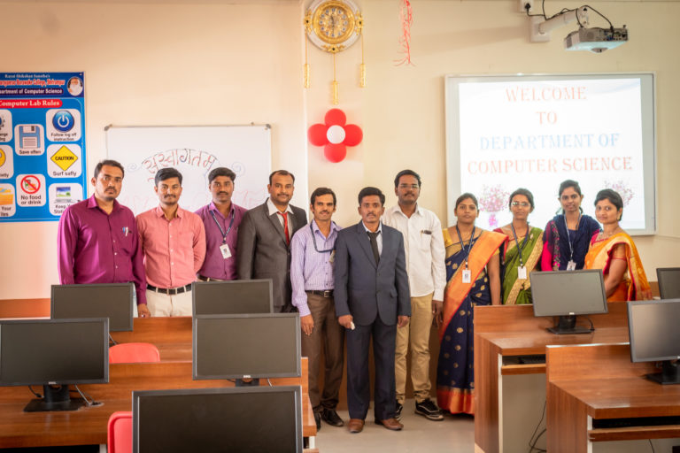

About Our College
Rayat Shikshan Sanstha, Satara is a premier educational institution which has invited the attention of international educational fraternity towards its recognition as the biggest educational institution in Asia both in quality and quantity parameters. The Founder of Sanstha, Dr. Karmaveer Bhaurao Patil had an incisive understanding of the social ills that beset his times and fully realized the dire need of the spread of education. From the very beginning, Sanstha has laid emphasis on the education for the downtrodden and the poor that really form the major bulk of the society.
Today, Sanstha runs 42 senior colleges, a newly added 1 research institute, 438 secondary schools, 8 training colleges, 42 primary schools, 31 pre-primary schools, 80 cosmopolitan hostels, 7 administrative offices, 8 ashramshalas, and 57 ancillary branches. It is spread over in 15 districts of Maharashtra and 1 district of Karnataka with 14627 employees belonging to different 170 castes and communities and 4 Lakh 54 Thousand 166 students.
Department Of Computer Science
 Department of Computer Science started in the year 1997. UG Course name – B.Sc. (Computer Science) was introduced in the year 1997. PG Course name – M.Sc. (Computer Science ) started from June, 2010. Students strength is increasing day by day.Expansion and renovation work of the laboratories in the department was undertaken and completed in the last two years. Along with expansion, additional basic infrastructural developments were carried out. Recently department have purchased 120 latest configured computers, 2 latest laptop , 6 LCD projector and 5 E-Learning Class Rooms . For convenient and handy reference work department runs a ‘Departmental library’ with 150 books and 05 journals. Department is provided free internet facility accessible to staff and students.Among faculties in department, two have participated and attended International and national level conference, seminars and workshops and also presented research papers.Department also organizes various ‘expert lecture series’ to the students under quality improvement programme of University of Pune. Our students also organize various functions like teachers day, send off function etc.